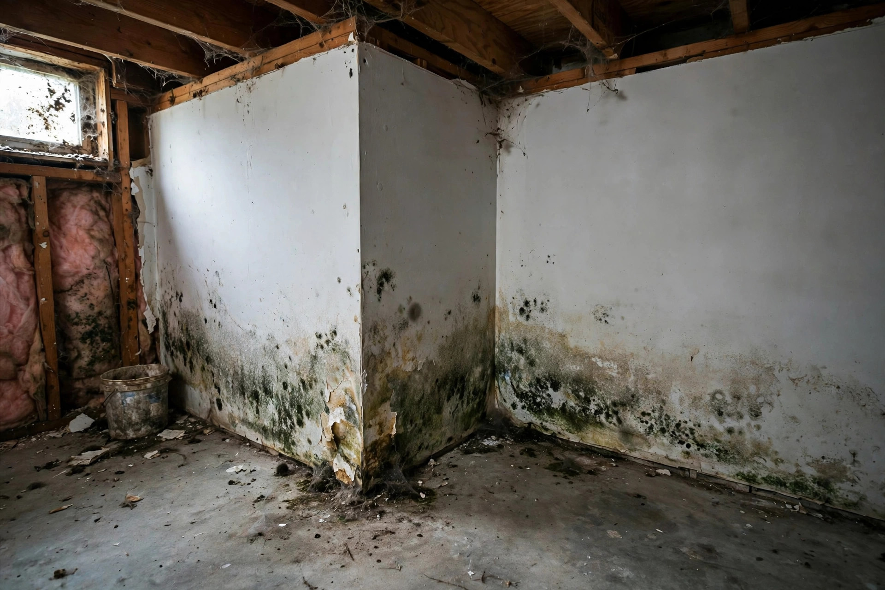
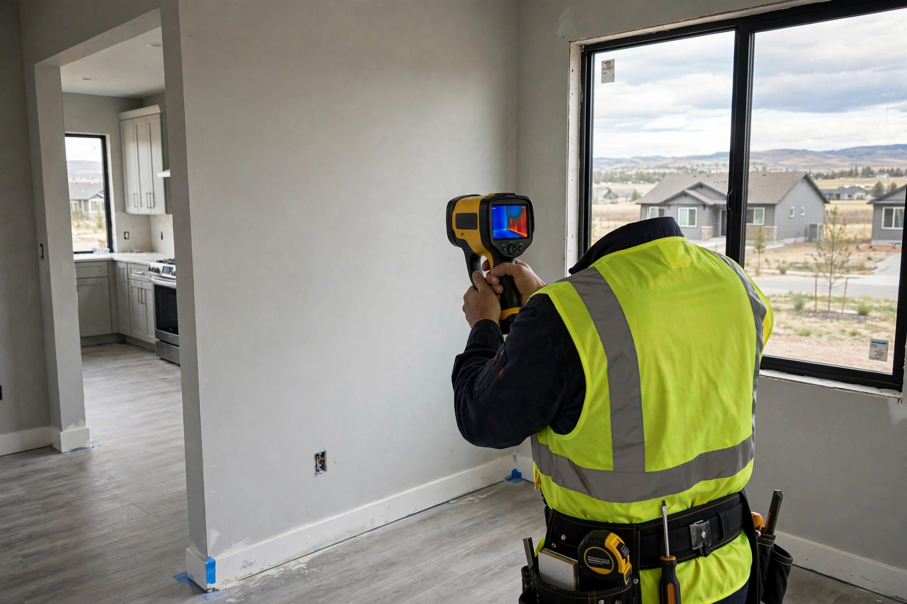

Home / Kuna
Kuna, Idaho · Ada CountyMold or water damage in Kuna? Get help from a local crew.
Kuna went from farm town to major suburb in barely two decades, and its homes show both sides of that story — aging pipes near downtown, fast-build shortcuts in the subdivisions. One call gets you an honest look at what's going on.

What drives moisture in Kuna homes
Kuna sits on high desert at the edge of farm country, so its moisture problems come from the collision of the two — irrigation water meeting fast-built suburbia:
- Boom-era construction pace. Subdivisions like Crimson Point went up in a few short years. When crews race, small things slip: bath fans vented into the attic, flashing done in a hurry, grading that looks fine until the first heavy rain.
- Canal-season groundwater. The New York Canal and its laterals carry irrigation water past Kuna spring through fall. In low spots the water table rises with the season, and slab edges that were dry in March can feel damp by July.
- Sprinklers vs. foundations. New subdivisions get enthusiastic landscaping on immature grading. A rotor head aimed a few degrees wrong soaks the same stretch of foundation nightly all summer — unnoticed until baseboards swell.
- Swamp coolers in older homes. Many downtown Kuna houses still run evaporative coolers. Fine in dry heat, but a neglected pad or a unit run with the house buttoned up pushes indoor humidity past the point where mold settles on cool surfaces.

Kuna questions, answered
My Kuna home was built in the last ten years — can it still get mold?
Yes. Newer Kuna subdivisions went up fast during the growth boom, and new construction has its own weak points: bath fans vented into attics, grading that settles toward the foundation, and tight envelopes that trap shower and cooking moisture. Age doesn't prevent mold — trapped moisture causes it.
Does irrigation water near Kuna affect basements or crawlspaces?
It can. The New York Canal and lateral ditches move a lot of water through the Kuna area in irrigation season, and shallow groundwater rises in low-lying spots. Homes near canals or in lower subdivisions sometimes see damp crawlspaces or seepage at the slab edge in summer — when people assume everything is dry.
Can my swamp cooler cause mold inside the house?
Evaporative coolers add real humidity to indoor air — fine when the house breathes, a problem in tightly sealed rooms. Worn pads, a dripping distribution line, or a cooler run with windows closed can push indoor humidity high enough for mold on window frames, closet walls, and ceiling corners.
What's different about mold risk in downtown Kuna versus the newer subdivisions?
Downtown Kuna's older homes tend to have aging supply lines, original roofs near end of life, and crawlspaces that were never encapsulated — so slow plumbing leaks and roof drips are the usual culprits. In subdivisions like Crimson Point, the issues skew toward ventilation shortcuts, sprinkler overspray against foundations, and grading that wasn't quite right.
Do you serve Falcon Crest and the neighborhoods south of town?
Yes — all of Kuna, including Falcon Crest, Crimson Point, downtown Kuna, and rural properties south toward the desert. Larger homes have more bathrooms and thus more plumbing connections, so a whole-house moisture check is worth it when something smells off.
Pick the problem you're seeing
Eight pages, one per problem. Each explains what causes it in Kuna homes, the signs to look for, and what a typical fix involves.
Mold Inspection
A walk-through with moisture readings to find where growth is coming from — not just where it's visible.
Learn more → MoldMold Remediation
Contained removal and HEPA filtration for active growth, done so it doesn't return next season.
Learn more → MoldBasement Mold Removal
Below-grade growth from seepage or humidity — common where groundwater runs shallow.
Learn more → MoldCloset Mold Removal
Growth on cold exterior walls behind stored clothes and boxes, where air never circulates.
Learn more → WaterEmergency Water Extraction
Standing water pulled out fast — burst lines, failed water heaters, storm intrusion.
Learn more → WaterFlooded Basement Cleanup
Pump-out, drying, and salvage when a basement takes on water.
Learn more → WaterCeiling Water Damage Repair
Stains and sagging from roof leaks or upstairs plumbing — dried, cut out, and rebuilt.
Learn more → WaterWater Damaged Drywall Repair
Flood cuts, structural drying, and rebuild after a leak or flood event.
Learn more →What happens after you dial
Describe what you're seeing
A short conversation — where the stain or smell is, how long it's been there, and whether anything leaked recently.
Get a straight read
We'll tell you whether it sounds like something that needs eyes on it, and what kind of visit makes sense.
Free inspection scheduled
Someone comes out, finds the moisture source with meters — not guesses — and lays out options before any work starts.
Something smell musty in the house?
Call and describe it — where you notice it and when it started. We'll tell you plainly whether it's worth an in-person look, at no charge for the conversation.
